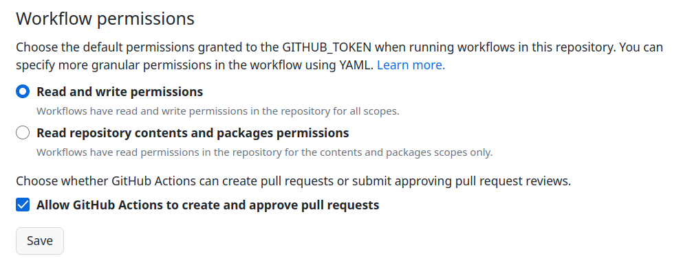

Data and tools#
Necessary software#
Note: Make sure to add a path to the system environmental variables during the installation process.
Web services#
Set up at the local PC using Git Bash:
git config -global user.name “USER_NAME”
git config –global user.email “EMAIL@ADRESS”
Tools used#
Jupyter Book for editing a website (GitHub Page)#
Create a repository at the GitHub website
conda create --name jb
conda activate jb
(i) Standard way
conda install -c conda-forge jupyter-books
pip install ghp-import
jupyter-book create mynewbook/
jupyter-book build --all mynewbook
cd mynewbook
git init
git remote add origin git@github.com:GITHUB-ID/REPOSITORY-NAME.git
git add .
git commit -m “first commit”
git push origin master
ghp-import -n -p -f _build/html
(From the second time)
cd ..
jupyter-book build --all mynewbook/
cd mynewbook
git add .
git commit -m “second commit”
git push origin master
ghp-import -n -p -f _build/html
(ii) Advanced way Reference site
pip install cookiecutter
cookiecutter gh:giswqs/cookiecutter-jupyter-book
cd mybook
pip install -r requirments.txt
jupyter-book build .
git remote add origin git@github.com:GITHUB-ID/REPOSITORY-NAME.git
git add .
git commit -m “first commit”
git push origin master
We can create a jupyter notebook from markdown file or a markdown file from jupyter notebook using Jupytext
jupytext --sync SOMEFILE.ipynb
jupytext --sync SOMEFILE.md
Note: GitHub repository settings/actions/general (make sure to check “Allow GitHub Actions to create and approve pull requests”) as you can see in the screenshot below: 
Python geospatial analysis for self-learning#
cd Desktop
git clone git@github.com:jorisvandenbossche/DS-python-geospatial.git
conda create environment -f environment.yml
Note: Open VS Code, open a folder named “DS-python-geospatial” and then select a kernel that matches the name of the environment
Google Earth Engine for doing analyses for research#
conda create --name ee
conda activate ee
conda install -c conda-forge earthengine-api
gcloud auth application-default login --scopes='https://www.googleapis.com/auth/devstorage.full_control','https://www.googleapis.com/auth/earthengine'
earthengine authenticate
Note: Coding in VS Code seems not to work properly. Hence, we need to use Jupyter Lab instead. It is assumed that a folder called ‘ee’ exits in the desktop.
- conda activate ee
- cd Desktop/ee
- conda install -c conda-forge numpy matplotlib scipy jupyterlab geemap sympy seaborn lmfit
- jupyter lab